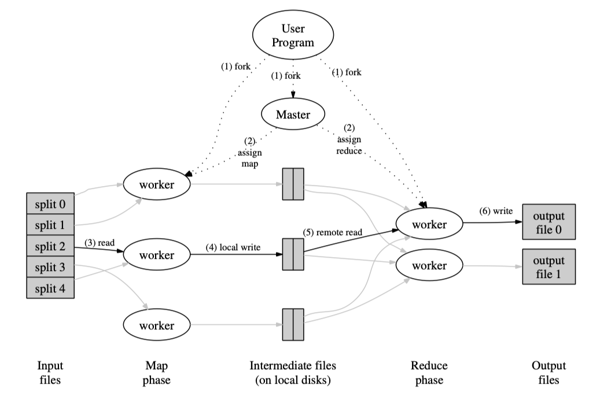
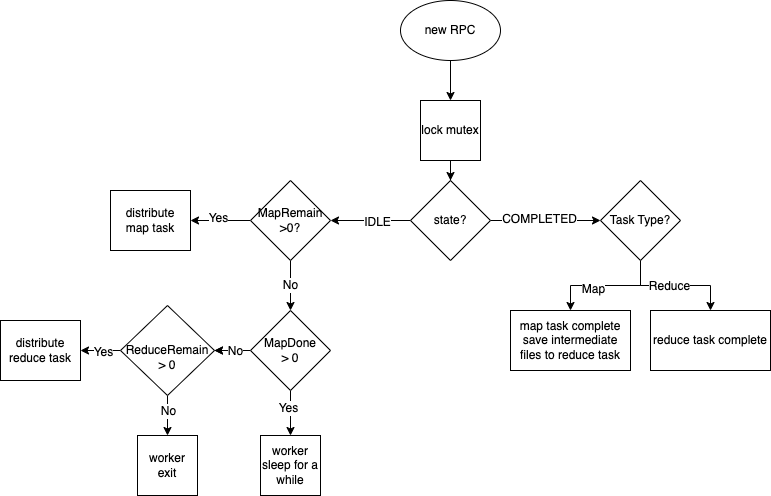
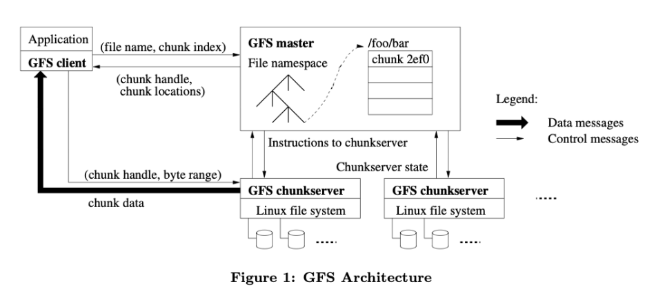
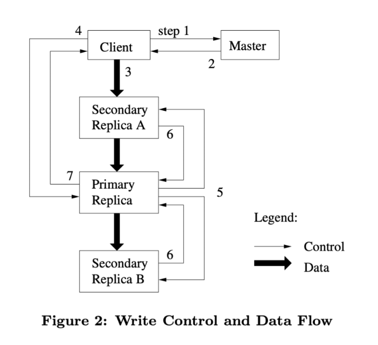
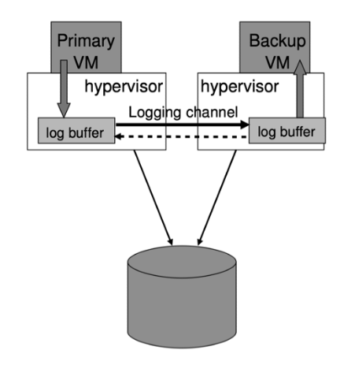
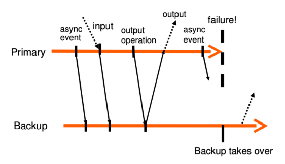

Distributed Systems MIT6.824 Notes
Introduction
I am always very interested in distributed system. This month I followed MIT 6.824 Distributed Systems and learned a lot. The course contains many paper reading tasks and four well-designed labs, including MapReduce, Raft, KV Raft and Sharded KV. I plan to use 1 month to finish the whole course lecture and finish all labs. This post is my learning notes.
MapReduce
Architecture
In 2004, Jeffrey Dean and Sanjay Ghemawat raised a programming model and an associated implementation for processing and generating large data sets in distributed systems, which is called MapReduce.

The system is composed of two roles. One is coordinator and the other is worker. Their will be only one coordinator but many workers in the system. They are all forked from the user program, which means the whole system is multithread operating. And workers can run on different machines in a distributed way.
When a worker is idle, it will use remote procedure call (RPC) to ask
the coordinator for a new task, which is either a map task or a reduce
task. A map task means that a worker will read a split of file and
process it into intermediate files, which contains key-value pairs in
this example. Besides, for the convenience of following tasks, a default
partitioning function is provided that uses hashing (e.g.
hash(key) % R). This tends to result in fairly
well-balanced partitions. After finishing this, these intermediate files
will be stored in the local disk of map machines and the worker will
send storing locations to the coordinator. After all map tasks are
finished, workers will be assigned reduce tasks. Reducers get
intermediate files, sort these key-value pairs and finally merge them
together to the output file.
Code
I followed the intructions of MIT6.824 lab1 and finished a MapReduce prototype.
1 | type Coordinator struct { |
The struct of coordinator is above. It contains a mutex to avoid race conditions. Maptasklist and Reducetasklist are all task arrays. Their initial lengths are defined by the number of files and the number of reduces (designated by users) separately. I also use MapRemain and ReduceRemain to record the remaining number of tasks. Each time when a worker is assigned a task, the remaining number will decrease by 1. It also has an element called MapDone, which will only decrease when mapper finishs the task and returns the intermediate file locations. Only after all map tasks are done, coordinator can assign reduce work.
1 | type Maptask struct { |
The structs of Maptask and Reducetask are very similar. They both use State to indicate the status of task (eg. IDLE/IN PROGRESS/COMPLETED) and use MachineID to identify each machine. The only difference is that map task only need a filename for each input file while reduce task need a filename array for intermediate file locations.
The pipeline of mapreduce is shown below.

GFS
GFS is shorted for Google File System. It reflects a marked departure from some earlier file system design assumptions. Four new assumptions are below:
- component failures are the norm rather than the exception
- files are huge by traditional standards.
- most files are mutated by appending new data rather than overwriting existing data
- co-designing the applications and the file system API benefits the overall system by increasing our flexibility
Fault Tolerant
- architecture

A GFS cluster consists of a single master and multiple chunkservers and is accessed by multiple clients. The master maintains all file system metadata. This includes the namespace, access control information, the mapping from files to chunks, and the current locations of chunks. Clients interact with the master for metadata operations, but all data-bearing communication goes directly to the chunkservers.
- Interaction
The interaction workflow is shown below:

The client asks the master which chunkserver holds the current lease for the chunk and the locations of the other replicas.
The master replies with the identity of the primary and the locations of the other (secondary) replicas. The client caches this data for future mutations
The client pushes the data to all the replicas
Once all the replicas have acknowledged receiving the data, the client sends a write request to the primary.The request identifies the data pushed earlier to all of the replicas. The primary assigns consecutive serial numbers to all the mutations it receives, possibly from multiple clients, which provides the necessary serialization. It applies the mutation to its own local state in serial number order.
The primary forwards the write request to all secondary replicas. Each secondary replica applies mutations in the same serial number order assigned by the primary.
The secondaries all reply to the primary indicating that they have completed the operation.
The primary replies to the client
fast recovery
Both the master and the chunkserver are designed to restore their state and start in seconds no matter how they terminated.
Large Files
The system stores a modest number of large files. We expect a few million files, each typically 100 MB or larger in size. Multi-GB files are the common case and should be managed efficiently.
Each chunk size is 64MB, which is much larger than typical file system block sizes. A large chunk size offers several important advantages. First, it reduces clients’ need to interact with the master. Second, since on a large chunk, a client is more likely to perform many operations on a given chunk, it can reduce network overhead. Third, it reduces the size of the metadata stored on the master.
Appending
The workloads primarily consist of two kinds of reads: large streaming reads and small random reads. The workloads also have many large, sequential writes that append data to files.
Practically all our applications mutate files by appending rather than overwriting.
In one typical use, a writer generates a file from beginning to end. It atomically renames the file to a permanent name after writing all the data, or periodically checkpoints how much has been successfully written.
In the other typical use, many writers concurrently append to a file for merged results or as a producer-consumer queue. Record append’s append-at-least-once semantics preserves each writer’s output. Readers deal with the occasional padding and duplicates.
New APIs
- atomic append
GFS provides an atomic append operation called record append. In a record append, the client specifies only the data. GFS appends it to the file at least once atomically (i.e., as one continuous sequence of bytes) at an offset of GFS’s choosing and returns that offset to the client.
Record append is heavily used by our distributed applications in which many clients on different machines append to the same file concurrently. Such files often serve as multiple-producer/single-consumer queues or contain merged results from many different clients.
- Namespace Management and Locking
GFS logically represents its namespace as a lookup table mapping full pathnames to metadata. With prefix compression, this table can be efficiently represented in memory. Each node in the namespace tree (either an absolute file name or an absolute directory name) has an associated read-write lock.
Typically, if it involves /d1/d2/.../dn/leaf, it will acquire read-locks on the directory names /d1, /d1/d2, ..., /d1/d2/.../dn, and either a read lock or a write lock on the full pathname /d1/d2/.../dn/leaf. One nice property of this locking scheme is that it allows concurrent mutations in the same directory.
- Stale Replica Detection
Whenever the master grants a new lease on a chunk, it increases the chunk version number and informs the up-to-date replicas. The master and these replicas all record the new version number in their persistent state.
The master will detect that this chunkserver has a stale replica when the chunkserver restarts and reports its set of chunks and their associated version numbers. The master removes stale replicas in its regular garbage collection.
VMWare Fault Tolerant

VMs have some non-deterministic operations (e.g. reading a time-of-day clock or delivery of an interrupt), and so extra information must be sent to the backup to ensure that it is kept in sync.
For nondeterministic events such as timer interrupts or IO completion interrupts, the exact instruction at which the event occurred must also be recorded. During replay, the event must be delivered at the exact same point in the instruction stream.
FT Protocol
Output Rule: the primary VM may not send an output to the external world, until the backup VM has received and acknowledged the log entry associated with the operation producing the output.

Note that the Output Rule does not say anything about stopping the execution of the primary VM. We need only delay the sending of the output, but the VM itself can continue execution.
we cannot guarantee that all outputs are produced exactly once in a failover situation and the primary may also be lost during a failure of the primary and therefore won’t be delivered to the backup. But these two problems can be solved by the network infrastructure (TCP).
split-brain problem
we must ensure that only one of the primary or backup VM goes live when a failure is detected. To avoid split-brain problems, we make use of the shared storage that is used to store the virtual disks of the VM. At the point where either a primary or backup VM wants to go live, it executes an atomic test-and-set operation on the shared storage. If the operation succeeds, the VM is allowed to go live. If the operation fails, then the other VM must have already gone live, so the current VM actually halts itself.